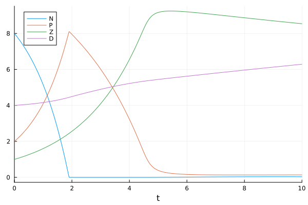

Tutorial: Solution of an NPZD model
This tutorial is about the efficient solution of production-destruction systems (PDS) with a small number of differential equations. We will compare the use of standard arrays and static arrays from StaticArrays.jl and assess their efficiency.
Definition of the production-destruction system
The NPZD model we want to solve was described by Burchard, Deleersnijder and Meister in Application of modified Patankar schemes to stiff biogeochemical models for the water column. The model reads
\[\begin{aligned} N' &= 0.01P + 0.01Z + 0.003D - \frac{NP}{0.01 + N},\\ P' &= \frac{NP}{0.01 + N}- 0.01P - 0.5( 1 - e^{-1.21P^2})Z - 0.05P,\\ Z' &= 0.5(1 - e^{-1.21P^2})Z - 0.01Z - 0.02Z,\\ D' &= 0.05P + 0.02Z - 0.003D, \end{aligned}\]
and we consider the initial conditions $N=8$, $P=2$, $Z=1$ and $D=4$. The time domain of interest is $t\in[0,10]$.
The model can be represented as a conservative PDS with production terms
\[\begin{aligned} p_{12} &= 0.01 P, & p_{13} &= 0.01 Z, & p_{14} &= 0.003 D,\\ p_{21} &= \frac{NP}{0.01 + N}, & p_{32} &= 0.5 (1.0 - e^{-1.21 P^2}) Z,& p_{42} &= 0.05 P,\\ p_{43} &= 0.02 Z, \end{aligned}\]
whereby production terms not listed have the value zero. Since the PDS is conservative, we have $d_{i,j}=p_{j,i}$ and the system is fully determined by the production matrix $(p_{ij})_{i,j=1}^4$.
Solution of the production-destruction system
Now we are ready to define a ConservativePDSProblem and to solve this problem with a method of PositiveIntegrators.jl or OrdinaryDiffEq.jl.
As mentioned above, we will try different approaches to solve this PDS and compare their efficiency. These are
- an out-of-place implementation with standard (dynamic) matrices and vectors,
- an in-place implementation with standard (dynamic) matrices and vectors,
- an out-of-place implementation with static matrices and vectors from StaticArrays.jl.
Standard out-of-place implementation
Here we create a function to compute the production matrix with return type Matrix{Float64}.
using PositiveIntegrators # load ConservativePDSProblemfunction prod(u, p, t) N, P, Z, D = u p12 = 0.01 * P p13 = 0.01 * Z p14 = 0.003 * D p21 = N / (0.01 + N) * P p32 = 0.5 * (1.0 - exp(-1.21 * P^2)) * Z p42 = 0.05 * P p43 = 0.02 * Z return [0.0 p12 p13 p14; p21 0.0 0.0 0.0; 0.0 p32 0.0 0.0; 0.0 p42 p43 0.0]endThe solution of the NPZD model can now be computed as follows.
u0 = [8.0, 2.0, 1.0, 4.0] # initial valuestspan = (0.0, 10.0) # time domainprob_oop = ConservativePDSProblem(prod, u0, tspan) # create the PDSsol_oop = solve(prob_oop, MPRK43I(1.0, 0.5))Plotting the solution shows that the components $N$ and $P$ are in danger of becoming negative.
using Plotsplot(sol_oop; label = ["N" "P" "Z" "D"], xguide = "t")
PositiveIntegrators.jl provides the function isnonnegative (and also isnegative) to check if the solution is actually nonnegative, as expected from an MPRK scheme.
isnonnegative(sol_oop)trueStandard in-place implementation
Next we create an in-place function for the production matrix.
function prod!(PMat, u, p, t) N, P, Z, D = u p12 = 0.01 * P p13 = 0.01 * Z p14 = 0.003 * D p21 = N / (0.01 + N) * P p32 = 0.5 * (1.0 - exp(-1.21 * P^2)) * Z p42 = 0.05 * P p43 = 0.02 * Z fill!(PMat, zero(eltype(PMat))) PMat[1, 2] = p12 PMat[1, 3] = p13 PMat[1, 4] = p14 PMat[2, 1] = p21 PMat[3, 2] = p32 PMat[4, 2] = p42 PMat[4, 3] = p43 return nothingendThe solution of the in-place implementation of the NPZD model can now be computed as follows.
prob_ip = ConservativePDSProblem(prod!, u0, tspan)sol_ip = solve(prob_ip, MPRK43I(1.0, 0.5))plot(sol_ip; label = ["N" "P" "Z" "D"], xguide = "t")We also check that the in-place and out-of-place solutions are equivalent.
sol_oop.t ≈ sol_ip.t && sol_oop.u ≈ sol_ip.utrueUsing static arrays
For PDS with a small number of differential equations like the NPZD model the use of static arrays will be more efficient. To create a function which computes the production matrix and returns a static matrix, we only need to add the @SMatrix macro.
using StaticArraysfunction prod_static(u, p, t) N, P, Z, D = u p12 = 0.01 * P p13 = 0.01 * Z p14 = 0.003 * D p21 = N / (0.01 + N) * P p32 = 0.5 * (1.0 - exp(-1.21 * P^2)) * Z p42 = 0.05 * P p43 = 0.02 * Z return @SMatrix [0.0 p12 p13 p14; p21 0.0 0.0 0.0; 0.0 p32 0.0 0.0; 0.0 p42 p43 0.0]endIn addition we also want to use a static vector to hold the initial conditions.
u0_static = @SVector [8.0, 2.0, 1.0, 4.0] # initial valuesprob_static = ConservativePDSProblem(prod_static, u0_static, tspan) # create the PDSsol_static = solve(prob_static, MPRK43I(1.0, 0.5))using Plotsplot(sol_static; label = ["N" "P" "Z" "D"], xguide = "t")This solution is also nonnegative.
isnonnegative(sol_static)trueThe above implementation of the NPZD model using StaticArrays can also be found in the Example Problems as prob_pds_npzd.
Performance comparison
Finally, we use BenchmarkTools.jl to show the benefit of using static arrays.
using BenchmarkTools@benchmark solve(prob_oop, MPRK43I(1.0, 0.5))BenchmarkTools.Trial: 3176 samples with 1 evaluation per sample.
Range (min … max): 1.192 ms … 10.569 ms ┊ GC (min … max): 0.00% … 87.18%
Time (median): 1.291 ms ┊ GC (median): 0.00%
Time (mean ± σ): 1.574 ms ± 1.554 ms ┊ GC (mean ± σ): 18.09% ± 15.46%
█▃
██▆▃▁▁▁▁▁▁▁▁▁▁▁▁▁▁▁▁▁▁▁▁▁▁▁▁▁▁▁▁▁▁▁▁▁▁▁▁▁▁▁▁▁▁▁▁▁▁▁▁▁▅▆▇▇▇ █
1.19 ms Histogram: log(frequency) by time 10.2 ms <
Memory estimate: 2.81 MiB, allocs estimate: 38587.using BenchmarkTools@benchmark solve(prob_ip, MPRK43I(1.0, 0.5))BenchmarkTools.Trial: 10000 samples with 1 evaluation per sample.
Range (min … max): 365.644 μs … 65.780 ms ┊ GC (min … max): 0.00% … 99.24%
Time (median): 440.099 μs ┊ GC (median): 0.00%
Time (mean ± σ): 450.173 μs ± 765.773 μs ┊ GC (mean ± σ): 2.34% ± 1.40%
▃██▄▆▇▅▄▃▂ ▁
▂▂▂▂▂▂▂▂▂▂▁▁▂▂▂▂▂▂▃▃▄▄▄▄▅▅▅▅▅▅▅▅▇████████████▇██▇▅▅▅▄▄▃▃▂▂▂▂▂ ▄
366 μs Histogram: frequency by time 483 μs <
Memory estimate: 72.55 KiB, allocs estimate: 1079.@benchmark solve(prob_static, MPRK43I(1.0, 0.5))BenchmarkTools.Trial: 10000 samples with 1 evaluation per sample.
Range (min … max): 235.333 μs … 11.429 ms ┊ GC (min … max): 0.00% … 90.65%
Time (median): 282.557 μs ┊ GC (median): 0.00%
Time (mean ± σ): 290.966 μs ± 269.393 μs ┊ GC (mean ± σ): 2.64% ± 2.79%
▂▄▃▁▁▁▂▂▄▄▃▂▁▁▃▂▆█▇▆▅▄▆▆▅▄▃▂▂▁ ▂
▄▁▁▁▁▆█▇▆▆▆▇▆▆▆▄▁▅▅▁▄▅▅▄▃▅████████████████████████████████▇▇▆ █
235 μs Histogram: log(frequency) by time 301 μs <
Memory estimate: 64.66 KiB, allocs estimate: 378.Package versions
These results were obtained using the following versions.
using InteractiveUtilsversioninfo()println()using PkgPkg.status(["PositiveIntegrators", "StaticArrays", "LinearSolve"], mode=PKGMODE_MANIFEST)Julia Version 1.12.7
Commit 6d172b025e4 (2026-08-15 08:05 UTC)
Build Info:
Official https://julialang.org release
Platform Info:
OS: Linux (x86_64-linux-gnu)
CPU: 4 × INTEL(R) XEON(R) PLATINUM 8573C
WORD_SIZE: 64
LLVM: libLLVM-18.1.7 (ORCJIT, sapphirerapids)
GC: Built with stock GC
Threads: 1 default, 1 interactive, 1 GC (on 4 virtual cores)
Environment:
JULIA_PKG_SERVER_REGISTRY_PREFERENCE = eager
Status `~/work/PositiveIntegrators.jl/PositiveIntegrators.jl/docs/Manifest.toml`
[7ed4a6bd] LinearSolve v5.13.2
[d1b20bf0] PositiveIntegrators v0.2.19 `~/work/PositiveIntegrators.jl/PositiveIntegrators.jl`
[90137ffa] StaticArrays v1.9.19